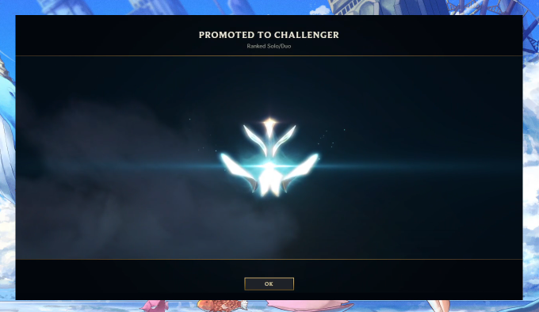

I've always been a competitive person and gaming was one of the ways for me to channel my competitive energy. I particularly enjoy strategy and puzzle games.
During my time playing League, I've also gotten to consult for a few professional Academy and LCS players as well as a few twitch streamers. Was also a stereotypical
twitch moderator for a few channels!
